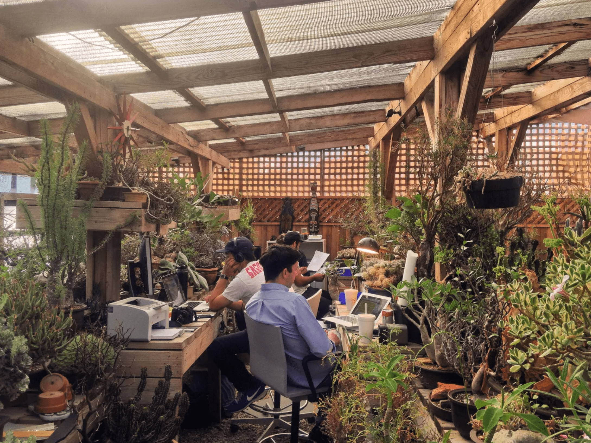

What’s your vibe? Find some tunes to listen to while exploring the Site:
Spa day
On the beach, Drifting Away
outside the hasty mart
Welcome to my playground!
 Myla she/her software engineer science communicator Canada
Myla she/her software engineer science communicator Canada
Please enjoy your visit. Don’t forget to stop by the gift shop on your way out!
| Guidelines for handling informative websites from Jeff Huang’s manifesto “This Page is Designed to Last”. | |
|---|---|
| Return to vanilla HTML/CSS | |
| Don’t minimize that HTML | |
| Prefer one page over several | |
| End all forms of hotlinking | |
| Stick with native fonts | |
| Obsessively compress your images | |
| Eliminate the broken URL risk |

 A dreamy summer harvest from my partner and I’s garden.
A dreamy summer harvest from my partner and I’s garden.
Musings on interacting with the Web ...
“Still, I have difficulties finding a site or an app, that actually addresses the users, and sees their presence as a part of the work flow. This maybe sounds strange, because all web 2.0 is about pushing people to contribute, and “emotional design” is supposed to be about establishing personal connections in between people who made the app and people who bought it, but I mean something different. I mean a situation when the work flow of an application has gaps that can be filled by users, where smoothness and seamlessness are broken and some of the final links in the chain are left for the users to complete.” — Olia Lialina, Turing Complete User

My dream working environment.
The gifs on this page were found using GifCities! The GeoCities buttons were found around the Net.